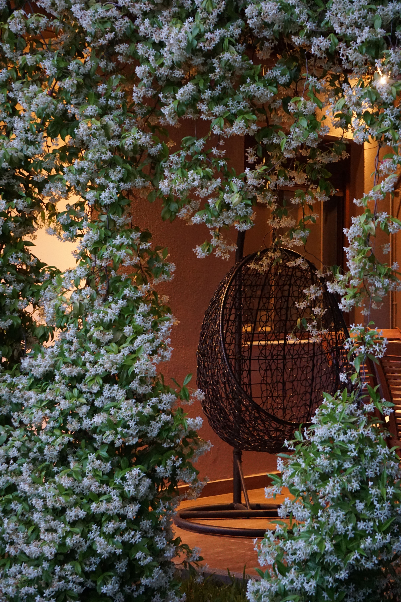

A dedicated garden retreat can turn even a modest outdoor area into a place for reading, conversation, or quiet time. The best results come from choosing the right location, providing comfortable seating, controlling sun and privacy, and surrounding the area with plants and details that are easy to maintain.
In This Article
- Choose the Right Location
- Study Sun and Shade Before Buying Furniture
- Select Comfortable Outdoor Seating
- Use Outdoor Textiles Wisely
- Create Privacy Without Closing the Space
- Use Plants to Build a Calmer Atmosphere
- Add a Small Surface for Everyday Use
- Think About Evening Lighting
- Reduce Visual Clutter
- Use Natural Sounds Carefully
- Plan for Easy Maintenance
- Make Small Gardens Feel More Spacious
- Adapt the Corner to Different Seasons
- Keep Safety Part of the Design
- Personalize the Space Without Overdecorating
- Test the Corner Before Making Permanent Changes
- Frequently Asked Questions
- Conclusion
- Review the Retreat Over Time
- Review the Retreat Over Time
- Review the Retreat Over Time
- Review the Retreat Over Time
- Review the Retreat Over Time
- Review the Retreat Over Time
Choose the Right Location
A relaxing garden corner begins with location. Walk through the outdoor area at different times of day and notice where the atmosphere naturally feels calmer. Pay attention to direct sun, shade, wind, nearby doors, street noise, views, and the routes people use most often. A beautiful corner will not feel restful if it sits in the middle of constant movement.
Look for a place that offers a sense of separation without becoming isolated from the rest of the garden. A position beside a wall, hedge, tree, pergola, or group of plants can create a subtle feeling of enclosure. In a small garden, even one quiet edge can become a convincing retreat when the furniture and planting are scaled correctly.
Consider practical access as well. The route to the seating area should remain comfortable after rain and should not require stepping through delicate planting. If the corner will be used in the evening, think about how people will reach it safely after dark.
Study Sun and Shade Before Buying Furniture
Comfort changes dramatically according to sun exposure. A place that feels pleasant early in the morning may become extremely hot in the afternoon, while a heavily shaded corner may stay damp or cool for long periods. Observe the area before deciding what kind of shade or shelter is necessary.
Existing trees, walls, and structures may already provide useful shade. Where additional protection is needed, an outdoor umbrella or another appropriate solution can make the area more usable. Permanent structures should be planned according to local requirements and the conditions of the property.
Do not forget seasonal changes. The angle of the sun and the density of deciduous vegetation can change throughout the year, so a flexible arrangement is often easier to adapt.
Select Comfortable Outdoor Seating
The seating determines whether the corner will actually be used. Choose outdoor furniture designed for the conditions it will face and large enough to be comfortable without overwhelming the available area.
Test seat height, depth, back support, and arm position whenever possible. Decorative furniture that is uncomfortable quickly becomes something people look at rather than use. In a compact garden, one good chair or a small bench may be more valuable than a crowded set.
Leave enough room around the furniture for people to sit down, stand up, and move without stepping into planting beds. Measure the space with chairs pulled out rather than judging only the furniture footprint.
Use Outdoor Textiles Wisely
Cushions, throws, and an outdoor rug can make a garden seating area feel softer and more inviting. Choose products intended for exterior use when they will be exposed to moisture or sunlight.
Keep the color palette simple so the corner feels calm rather than visually busy. Repeating one or two tones from nearby flowers, foliage, walls, or furniture can connect the seating area to the rest of the garden.
Plan where textiles will be stored during bad weather. A weather-resistant storage box or an indoor storage location can extend their useful life and keep the retreat easy to reset.
Create Privacy Without Closing the Space
A relaxing corner often benefits from some privacy, but complete enclosure is not always necessary. Plants, trellises, screens, fences, or changes in furniture orientation can reduce unwanted views while preserving light and airflow.

Use the least intrusive solution that solves the problem. A tall solid barrier can make a small garden feel cramped, while layered planting may provide a softer visual screen.
Check local rules before adding permanent fences or structures. Also consider neighbors and avoid solutions that create unnecessary conflict or block important shared light.
Use Plants to Build a Calmer Atmosphere
Plants can define the retreat, soften hard surfaces, and create a stronger connection with nature. Combine foliage shapes and heights rather than relying only on flowers.
Choose species suited to the actual light, soil, climate, and maintenance routine. A relaxation area becomes less relaxing if the surrounding plants constantly need rescue, pruning, or cleanup.
Fragrant plants can be pleasant, but strong scents are personal and some flowers attract many insects. Place them thoughtfully rather than assuming more fragrance is always better.
Add a Small Surface for Everyday Use
A compact side table gives you somewhere to place a drink, book, glasses, or phone. It does not need to dominate the layout.
Choose a stable outdoor piece that can tolerate the local conditions. In a tiny corner, a narrow table or movable stool can provide enough surface without reducing circulation.
Keep the tabletop mostly clear. The purpose is convenience, not creating another area that requires constant decorating and cleaning.
Think About Evening Lighting
Soft outdoor lighting can extend the use of the garden corner after sunset. Prioritize safe movement first, then atmosphere.
Path lights, wall fixtures, or carefully positioned portable outdoor lights can create enough visibility without flooding the entire garden with brightness. Avoid glare directly at eye level.
Any fixed electrical work should comply with local requirements and use equipment rated for outdoor conditions.

Reduce Visual Clutter
A restful space usually benefits from fewer, better-chosen objects. Too many ornaments, pots, signs, and accessories can make a small corner feel busy.
Choose a focal element such as a plant, view, piece of furniture, or simple decorative object, then allow some empty space around it.
Regularly remove items that have migrated into the area but do not belong there. Keeping the corner ready for use is part of maintaining its relaxing character.
Use Natural Sounds Carefully
Moving leaves, birds, and other garden sounds can contribute to a peaceful atmosphere. A small water feature may also create sound, but it adds cleaning, water, safety, and maintenance considerations.
Before adding a feature, listen to the existing environment. Sometimes repositioning the seat away from a noisy boundary makes a greater difference than introducing another object.
If traffic or neighboring activity is unavoidable, planting and solid landscape elements may soften perception, although they will not completely soundproof an outdoor area.
Plan for Easy Maintenance
The retreat should not become the most demanding part of the garden. Choose durable furniture, manageable planting, and surfaces that are easy to clean.
Keep access open for sweeping, watering, pruning, and furniture maintenance. If every task requires moving several heavy pieces, the design will become frustrating.
A quick weekly reset is usually enough when the space has been planned simply.
Make Small Gardens Feel More Spacious
In a compact garden, use furniture with appropriate proportions and avoid filling every edge. Visible floor area and clear sight lines help the retreat feel less crowded.
Vertical planting or wall-mounted elements can add greenery without taking much floor space, provided they are installed safely and maintained appropriately.

One carefully designed corner often feels more generous than several tiny competing zones.
Adapt the Corner to Different Seasons
A movable chair, adjustable shade, and portable textiles make it easier to respond to changing weather.
During cooler months, the sunniest part of the garden may be preferable, while summer use may depend on shade and airflow. Flexible furniture allows the retreat to move or change orientation.
Store seasonal accessories when they are not useful so the area remains uncluttered.
Keep Safety Part of the Design
Check paving for uneven surfaces, keep routes clear, and make sure furniture is stable. Avoid loose cables and unstable decorative objects.
Consider children, pets, older visitors, and anyone with limited mobility when arranging the area. A narrow or slippery route can make an otherwise attractive retreat difficult to use.
Safety should be integrated quietly into the design rather than treated as an afterthought.
Personalize the Space Without Overdecorating
A reading book, favorite cushion, small piece of outdoor art, or meaningful planter can give the retreat personality.
Choose details that support how you intend to use the space. If the goal is reading, prioritize light and a comfortable chair. If the goal is conversation, orient seats toward one another.
The most personal spaces often feel intentional because every item has a reason to be there.
Test the Corner Before Making Permanent Changes
Place existing chairs in the proposed location and use them for several days. Notice heat, glare, noise, wind, insects, privacy, and how easy the area is to reach.
This temporary test can reveal problems that are difficult to predict from a plan. It may also show that fewer changes are needed than expected.
Only after the location proves comfortable should you invest in heavier furniture, permanent planting, or fixed structures.
Frequently Asked Questions
How much space is needed for a garden relaxation corner?
There is no fixed minimum. A single comfortable chair, clear access, and a small surface can create a useful retreat in a very compact garden.
What is the most important element?
Comfortable seating in a well-chosen location is usually the priority. Decoration matters less if the area is too hot, noisy, exposed, or difficult to reach.
How can I create privacy cheaply?
Reorienting furniture, using existing vegetation, or adding a simple appropriate screen can reduce unwanted views without rebuilding the garden.
Do I need a pergola?
No. Existing shade, an outdoor umbrella, trees, or another suitable solution may be enough depending on the site.
How do I keep the area low maintenance?
Use weather-appropriate furniture, plants suited to local conditions, limited accessories, and a layout that remains easy to sweep, water, and inspect.
Conclusion
A relaxing garden corner does not require a large budget or a large property. Observe the site first, choose a comfortable location, use correctly scaled furniture, create privacy where needed, and select plants that suit the conditions. Add lighting, textiles, and personal details only when they improve how the area is used. A simple retreat that remains comfortable and easy to maintain will usually be enjoyed far more than an elaborate space that creates constant work.
Review the Retreat Over Time
After using the garden corner for several weeks, notice which elements are genuinely useful and which create work without improving comfort. Move furniture, simplify planting, or change shade as needed. Outdoor spaces evolve with seasons and plant growth, so occasional adjustments are normal.
A short review each season keeps the area aligned with how you actually use it and prevents unnecessary clutter from accumulating.
Review the Retreat Over Time
After using the garden corner for several weeks, notice which elements are genuinely useful and which create work without improving comfort. Move furniture, simplify planting, or change shade as needed. Outdoor spaces evolve with seasons and plant growth, so occasional adjustments are normal.
A short review each season keeps the area aligned with how you actually use it and prevents unnecessary clutter from accumulating.
Review the Retreat Over Time
After using the garden corner for several weeks, notice which elements are genuinely useful and which create work without improving comfort. Move furniture, simplify planting, or change shade as needed. Outdoor spaces evolve with seasons and plant growth, so occasional adjustments are normal.
A short review each season keeps the area aligned with how you actually use it and prevents unnecessary clutter from accumulating.
Review the Retreat Over Time
After using the garden corner for several weeks, notice which elements are genuinely useful and which create work without improving comfort. Move furniture, simplify planting, or change shade as needed. Outdoor spaces evolve with seasons and plant growth, so occasional adjustments are normal.
A short review each season keeps the area aligned with how you actually use it and prevents unnecessary clutter from accumulating.
Review the Retreat Over Time
After using the garden corner for several weeks, notice which elements are genuinely useful and which create work without improving comfort. Move furniture, simplify planting, or change shade as needed. Outdoor spaces evolve with seasons and plant growth, so occasional adjustments are normal.
A short review each season keeps the area aligned with how you actually use it and prevents unnecessary clutter from accumulating.
Review the Retreat Over Time
After using the garden corner for several weeks, notice which elements are genuinely useful and which create work without improving comfort. Move furniture, simplify planting, or change shade as needed. Outdoor spaces evolve with seasons and plant growth, so occasional adjustments are normal.
A short review each season keeps the area aligned with how you actually use it and prevents unnecessary clutter from accumulating.